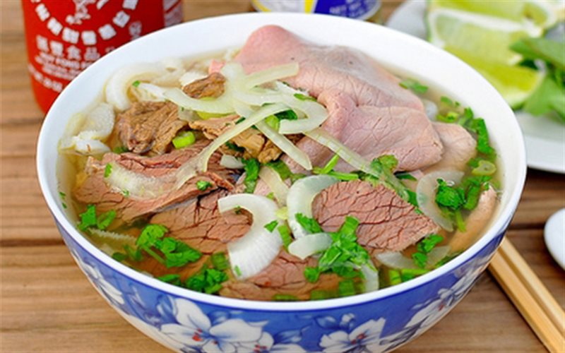

Vietnamese Noodle Recipe

Image: A bow of delicious pho bo
If you love Vietnamese food, no doubt you have tried Vietnamese rice noodle soup, Pho. Pho is served in practically every Vietnamese restaurant here in the States, so much so that people think Vietnamese food is mainly pho. It is just the tip of the iceberg in Vietnamese cuisine but it’s the most iconic of them all.
There are two major types of pho: pho bo (beef) and pho ga (chicken). The beef version is fancier than the chicken version. Therefore, taking longer to cook. The beef version is made and eaten with assorted cuts and parts of beef. The stock is made from beef shank, neck and ox tail. The meaty toppings include thinly sliced eye-round beef steak, flank, brisket, beef balls, tendon and tripe. It's also spiced with more aromatics than the chicken version: cardamom, cinnamon, star anise, coriander, and cloves.
Ingredients
- 3 lbs beef bones (ox tail, neck bones and/or shank bones)
- 6 liters water
- 2 teaspoons salt
- 8 large shallots (about 15 oz; roast whole in oven at 350°F for 40 minutes, allow to cool then peel)
- 4 oz ginger (roast in oven at 350°F for 40 minutes; allow to cool then slice into thick slices with peel-on)
Steps
- Clean the beef bones. Cleaning the bones will rid of all the impurities and ensure a clear broth. To clean the bones, bring a large pot of water with 1 tablespoon salt to a rolling boil. Add beef bones (except shank with bone marrow) and boil for 2-3 minutes. For shanks with bone marrow, quickly dunk them in the boiling salted water. This way the shanks are cleaned but the marrow do not melt away. Remove the bones and give them a quick scrub and rinse.
- In another large pot, add 5 liters water and bring to a boil. Add cleaned bones, roasted shallots and ginger to the pot. Cook for 3 hours, semi-covered on medium low heat. Occasionally, use a ladle to scum off the impurities that float to the top. After 3 hours, remove bones, ginger and shallot from stock and discard. There may be good amount of tender meat on the bones (particularly ox tail) so remove the meat from the bones and set aside as a meaty topping before discarding.
- In a small frying pan, quickly toast the dried spices until fragrant (30 seconds to 1 minute). Shake them around to prevent burning. Wrap the toasted spices in a cheese cloth or use a spice ball and add to pot. Simmer on low for 30 minutes. After 30 minutes, remove cheese cloth/spice ball.
- Season stock with rock sugar, MSG, fish sauce, and salt to taste
- When ready to serve, bring a small pot of water to a boil and blanch a large handful of rice noodles for a few seconds. Add cooked noodles to a serving bowl. Add your choices of meat with the raw slices of eye-round beef steak on top. Ladle in hot broth and over the raw beef slices. Top with a bit of white/yellow onions, green onions, and chopped cilantro. Serve bowl with a side of bean sprouts, Thai basil, jalapeno slices, lime wedges and of course, Hoisin and Sriracha sauce.